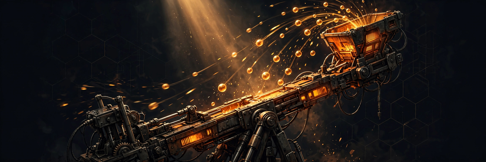

The Signal · Edition 4 · October 2026
The Rulebook Changed Again — and the Robots Keep Moving to Detroit
Published October 5, 2026 · By Justin Spencer Smith · Also on LinkedIn

Three weeks into BIOBUZZ, the rulebook has already changed twice.
Team Update 01 landed September 17 — a hive-height correction (the bottom of the hive sits 30.6 inches above the tiles), a yellow/red card cleanup, and a clarified Question Box process: technical questions go to the FTA, and up to two student reps talk to the head ref after match results post.
Team Update 02 landed September 24, and this one changes how you play. The current manual is version TU02. If your strategy doc still says TU01, update it.
Defense has a bright line now
G420 — "do not tip or entangle" — got examples that matter. Contact with exposed wiring or a fragile intake in normal play: probably not a violation. Using a wedge to tip an opponent: strategic. Slamming frame-to-frame into a robot that's trying to right itself: strategic. Touching a robot that has already started tipping, if the ref decides you could have avoided it: strategic.
And "strategic" is the expensive word in this year's manual. It turns warnings into majors and majors into yellow and red cards. The season's new Competition Integrity Contract plus the defined STRATEGIC term means refs are told to judge intent, not just geometry.
So practice your defense driving against that standard. If your driver can't tell you where the line is — the moment contact becomes a card — they'll find it in a qualification match, and it will cost your alliance.
The human player can bank nectar
G426 was rewritten around two words: "whichever comes first." Nectar enters when a hive tips, or when the clock hits 60 seconds — and your human player is not required to feed nectar the instant a hive tips. They can hold it. The primary field timer is the cue. And refs want the remaining nectar kept visible and unambiguous in the alliance area, so there's no question about what's waiting.
That turns the human player into a tactician. Edition 2 called the human player a real position. TU02 upgraded the job description: timing the nectar dump is now a decision, not a reflex. Bank your nectar, flood the last minute, take the flowers.
One more date: the official Team Q&A opened September 28. When your drivers hit a gray area in TU02, ask it there — answers from the Q&A system carry weight at events.
The robots are moving to Detroit
This month, Danish autonomous mobile robot maker Robotize announced its first U.S. office — in metro Detroit. Their GoPal pallet-transport robots already had customers and partners on this side of the Atlantic; now the company has a home here too, led by 25-year industry veteran Dan Hasley.
They're not the only ones. Teradyne Robotics — the group behind Universal Robots and MiR — is standing up its U.S. operations hub in Wixom this year: building UR cobots here, plus a training, service, and visitor center with more than 200 jobs behind it.
Two global robotics companies planting flags in metro Detroit in one year. That's not a coincidence; it's a verdict. The work is coming here. The question is who gets to do it — and that is the entire argument for a pipeline that starts with a seventh grader and a robot kit.
Manufacturing Day was Friday
MFG Day is the first Friday of October, every year — this year, October 2. Factories across the country opened their doors. If you know a young person who's never stood on a production floor, mark October 1, 2027 now.
What we're building
September closed out Phase 2 of our 3D district rebuild — every building in the Detroit Automation Academy district is now true-to-scale, down to the riverfront pavilion, and the district itself is one square mile of procedural Detroit. The Signal section of our site now carries every published edition as a full on-page card, no click-through. And the new Detroit 2126 series launched with installment one, "The Ride Is Free," on fare-free transit and the future of Detroit–Chicago rail. We're at 32 subscribers. The flywheel is turning.
The Signal is the newsletter of Detroit Automation Academy — where Detroit builds what's next. New editions monthly. If you know a young builder who should be in the room, send them our way.